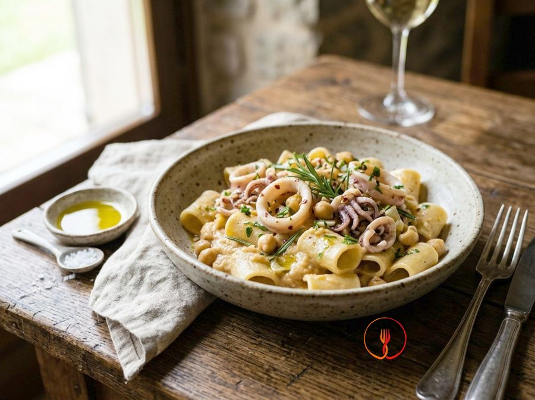

Pasta calamari e purea di ceci
Un piatto autunnale, gustoso e profumato!
Ingredienti
- Pasta calamarata160 gr
- Calamari200 gr
- Ceci cotti300 gr (peso cotto)
- Aglio1 spicchio
- Peperoncinoqb
- Rosmarino1 rametto
- Olio evoqb
- Succo di limone15 ml
Allergeni
Glutine, Molluschi
Può contenere tracce di: Crostacei, Pesce, Senape, Soia.
Procedimento
- In una padella larga aggiungere olio e far rosolare uno spicchio d'aglio, il peperoncino fresco spezzato e il rametto di rosmarino.
- Pulire e lavare i calamari, tagliarli a pezzetti non troppo piccoli, farli cuocere in padella con il soffritto preparato in precedenza e salare. Una volta ultimata la cottura togliere dalla padella, aglio, peperoncino e rosmarino.
- Nel frattempo, con un frullatore ad immersione frullare i ceci con un po' di olio evo, un pizzico di sale e il succo del limone, fino ad ottenere una crema.
- Una volta ultimata la cottura dei calamari, aggiungere nella padella ancora calda la purea di ceci e far insaporire qualche minuto.
- Cuocere la pasta in abbondante acqua salata. Scolare la pasta ancora al dente e mantecarla nella padella con il condimento.
- Servire calda.
Valori nutrizionali (stima)
| Per porzione (412 g) | Per 100 g | |
|---|---|---|
| Energia | 2615 kJ / 625 kcal | 636 kJ / 152 kcal |
| Proteine | 36 g | 8.8 g |
| Carboidrati | 82 g | 20 g |
| di cui zuccheri | 3.7 g | 0.9 g |
| Grassi | 13 g | 3.2 g |
| di cui saturi | 2.1 g | 0.5 g |
| Fibre | 9.9 g | 2.4 g |
| Sale | 1.2 g | 0.3 g |
Valori stimati con l'AI su dati medi CREA / USDA: sono indicativi e non sostituiscono il parere di un medico o di un nutrizionista.
Apri la ricetta nell'app per la lista della spesa, le schede ingredienti e i negozi vicini.